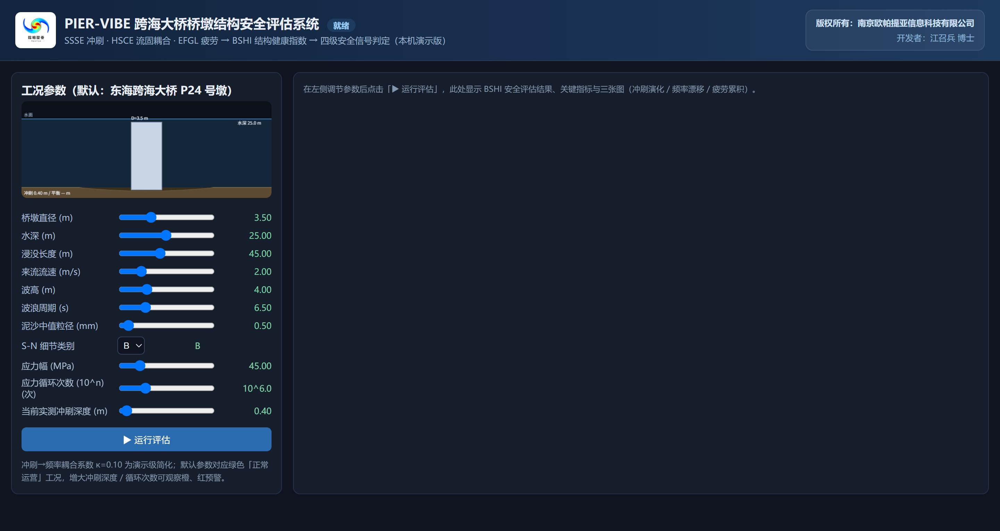

PIER-VIBE 跨海大桥桥墩结构安全评估系统 桌面本地版
冲刷深度 → 频率漂移 → 疲劳损伤 → BSHI 综合判定 —— 物理机理链全程可见、参数即调即算、结果可复现。
本软件面向跨海大桥桥墩的结构健康监测与安全评估，以物理机理链组织全部计算： 由水动力参数经 HEC-18 公式计算平衡冲刷深度、按 Melville-Coleman 模型推演冲刷发展时程； 以 Morison 方程计算波浪对桥墩的作用力，结合 S-N 曲线（B~E 类别）与 Palmgren-Miner 准则累积疲劳损伤；冲刷发展通过 f(Ds) = f0·√(1−κ·Ds/Ds,max) 直接映射到桥墩一阶频率，FFT 谱峰自动提取当前主频；最终按冲刷、疲劳、漂移三项加权合成 BSHI 综合健康指数，给出认证 / 预警 / 危险 / 停运四级安全信号与管控建议。 软件在本机以网页界面运行，数据不出本机。

软件主界面：左栏为桥墩-冲刷坑示意图与 11 个物理参数（桥墩直径、水深、泥沙粒径、波高、周期、流速、 当前冲刷深度、S-N 类别等），中部为 BSHI 综合健康指数与四级安全信号，下方为冲刷时程、 频率-冲刷耦合与 S-N 疲劳曲线三张实时图。
主要功能
机理链 5 级（冲刷 / 波浪力 / 疲劳 / 频率 / 综合）· 11 参数 · BSHI 四级判定 · 默认工况 BSHI ≈ 0.88（认证） · 单次评估毫秒级 · 100 s @ 100 Hz 时程固定种子可复现
算法依据与说明
冲刷计算依据美国联邦公路管理局 HEC-18 平衡冲刷深度公式与 Melville-Coleman 冲刷速率模型；波浪力按 Morison 方程（速度项 + 惯性项）计算； 疲劳评估采用 B~E 类别 S-N 曲线与 Palmgren-Miner 线性累积损伤准则， 含 Goodman 平均应力修正；冲刷-频率耦合采用 f(Ds) = f0·√(1−κ·Ds/Ds,max)； 综合健康指数 BSHI 按 0.35 / 0.35 / 0.30 加权并与四级阈值比较给出安全信号。 软件为演示与教学级参数口径（κ = 0.10），实际工程应用需结合现场监测数据标定。 全部计算代码为模块化 Python 实现（pier_vibe 包），与网页界面共用同一计算内核。